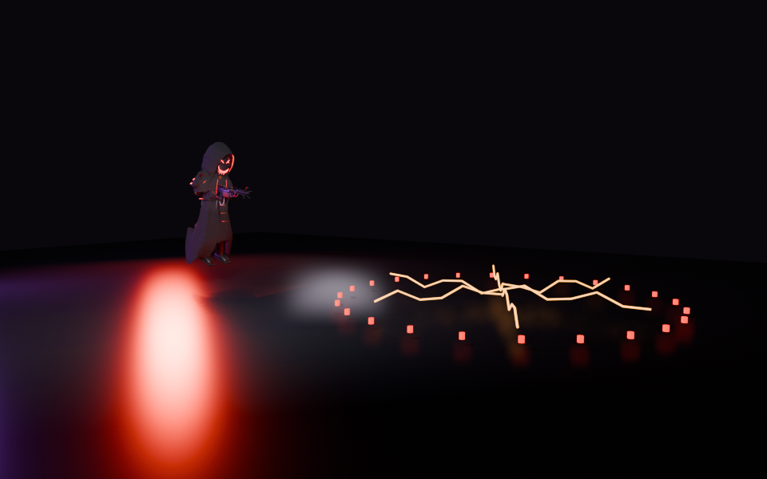
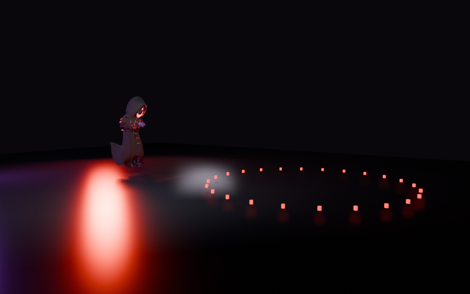
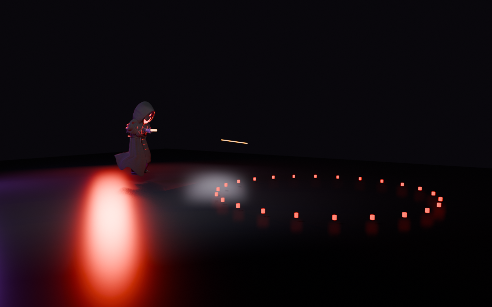

Native gun clips and models with an editable warning/effect study. The full 100-unit footprint is shown at player height. No bloom is used. Studio lighting and preview effect geometry are approximations; BO3 appearance, audio and performance await your playtest.
Move out of a fixed mark to dodge. Cover blocks damage. Pause, stun, phase changes and death cancel the attack. The shock hits each player once; six Dingo rounds stay inside the warned footprint.



Two generated takes per cue, measured and selected. No Dealer voice changed.
| warning | 1.8s / -20.0 LUFS | |
| burst_tell | 1.3s / -19.0 LUFS | |
| shock | 0.65s / -16.0 LUFS | |
| shot | 0.28s / -18.0 LUFS |
Editable Blender review · Clip/camera evidence · Native delivery proof
Independent code/art review passed. This is not a native playtest.